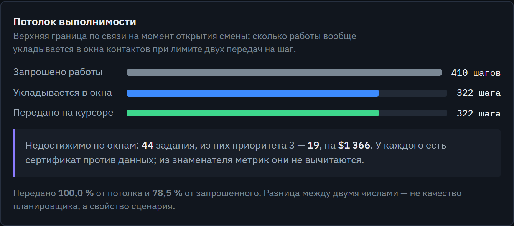
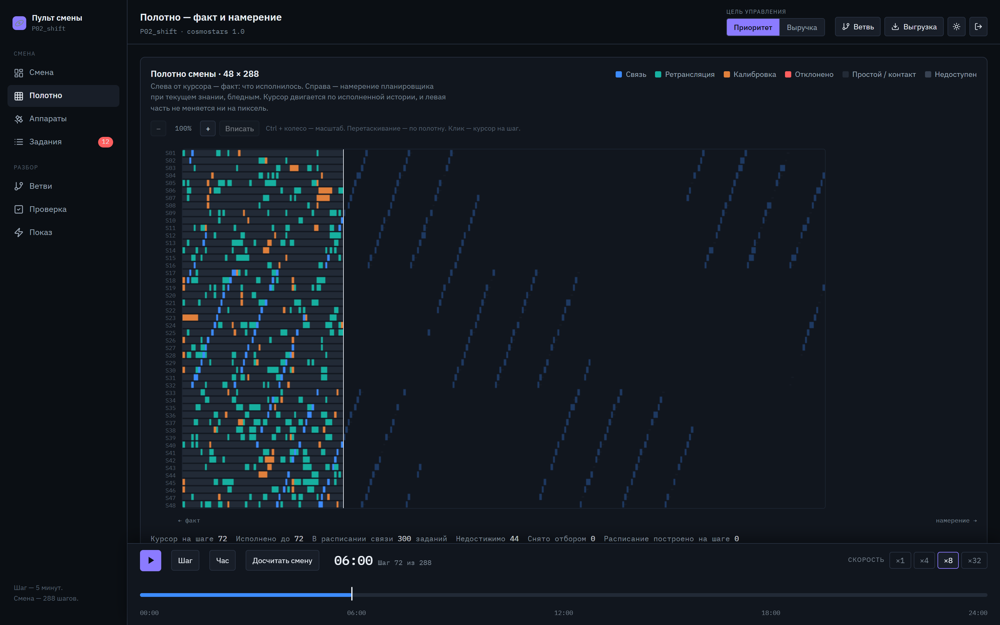
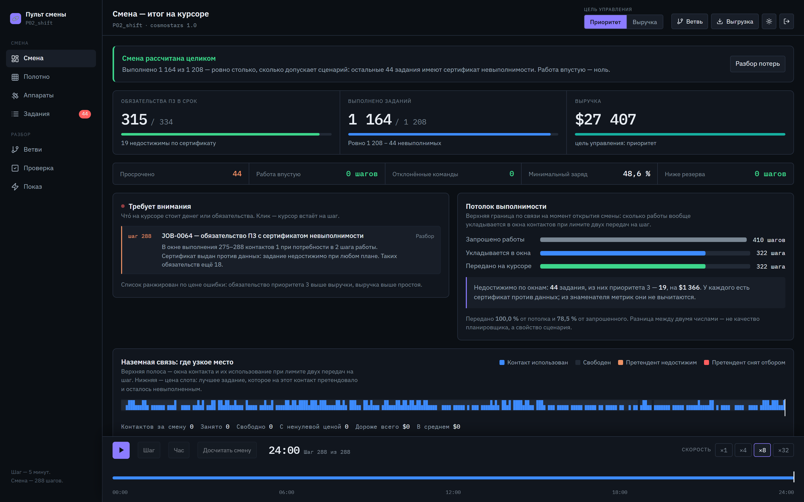
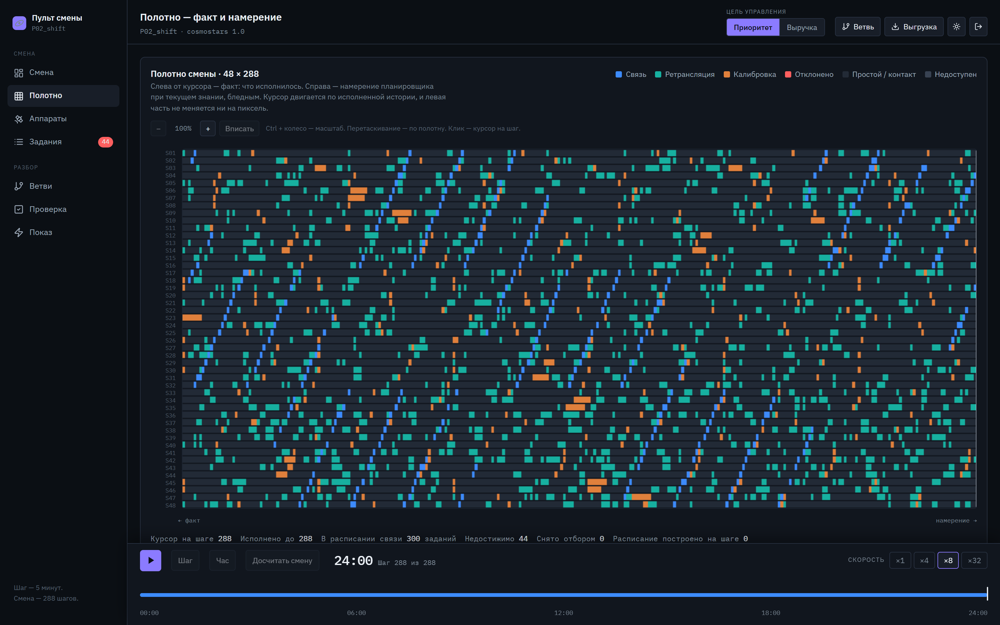
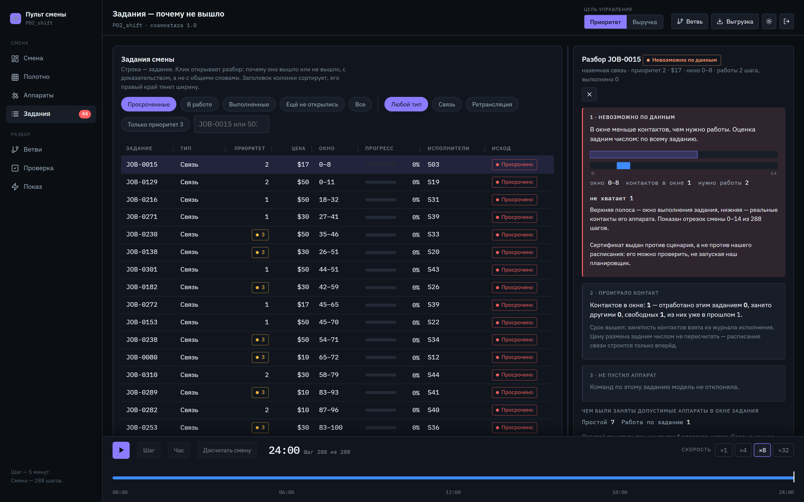
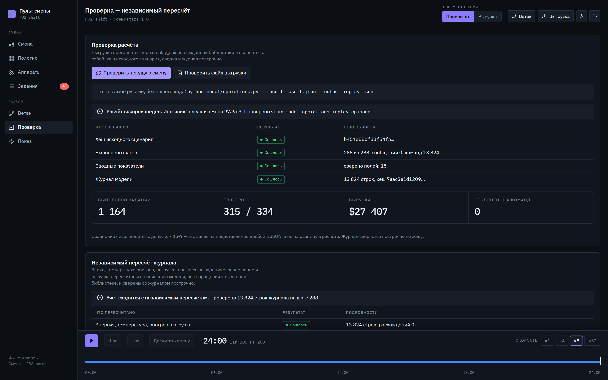
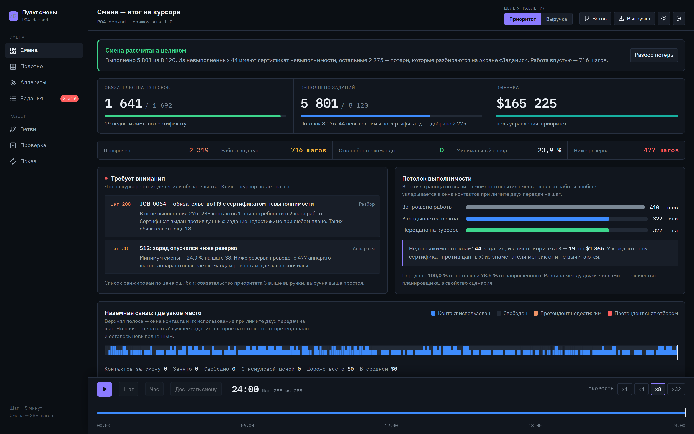
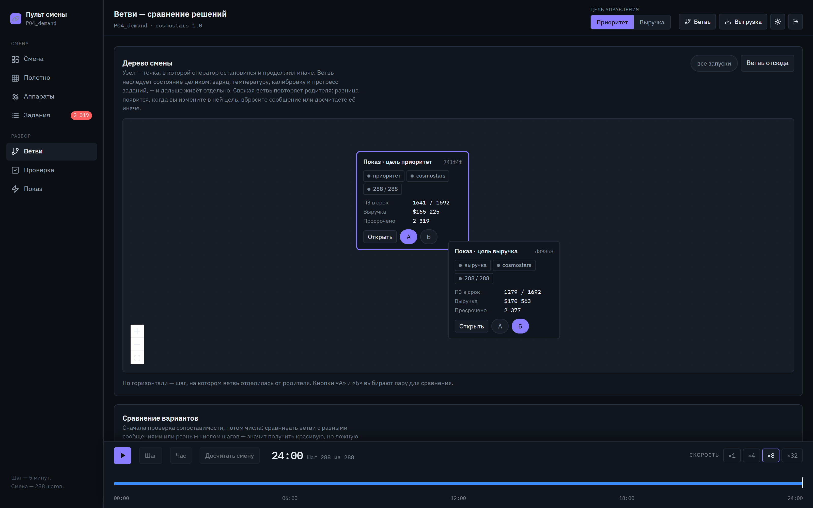

Пульт наземной смены: планирование, ветвление по сообщениям, разбор потерь
Каждое решение занимает ресурс, которого не будет на следующем шаге. Цена ошибки видна не сразу, а через час смены.
Двудольное паросочетание с лимитом два на шаг. Решается точно, а не подбором.
точноПошаговое правило. Упрощение осознанное — разрыв к точному решению мы измеряем, а не замалчиваем.
жадно, измереноСтавится до того, как аппарат понадобится передаче. Срок не превращается в простой в час пик.
упреждающеУзкое место смены — связь, поэтому именно оно решается точно. Остальное отдано правилам с измеренной ценой.
| Метрика | Простое правило | Cosmostars | Разница |
|---|---|---|---|
| P02 · суточная смена, цель «приоритет» | |||
| Завершено заданий | 1 137 | 1 164 | +27 |
| Приоритет 3 в срок | 303/334 | 315/334 | +12 |
| Выручка | $27 032 | $27 407 | +$375 |
| Работа впустую | 43 шага | 0 | −43 |
| P04 · перегрузка заявками, 8 120 заданий | |||
| Завершено заданий | 5 379 | 5 801 | +422 |
| Приоритет 3 в срок | 1 224/1 692 | 1 641/1 692 | +417 |
| Выручка | $128 162 | $165 225 | +$37 063 |
Уход ниже резерва — не строчка в отчёте, а риск для аппарата. Разница здесь качественная, а не процентная.

Снимок сервиса, не пересказ: тот же счёт на экране «Смена»
Планировщик достиг доказанного потолка. Оставшийся разрыв — свойство сценария, а не алгоритма.
Цель смены выбирает оператор. Мы показываем, чем он за этот выбор платит.
Плюс $6 196 выручки стоят 430 обязательств. Компромисс измерен, а не назван.
По каждому заданию сервис объясняет, что именно потеряно и почему.

Левая половина — журнал модели, она не перерисовывается никогда
Экран «Показ» — восемь маршрутов по критериям, каждый в один клик

Живой сервис, суточная смена P02 досчитана целиком
Перезапуск сервера теряет открытую смену. База данных — следующий шаг, не текущий.
Разрыв к точному решению измерен тем же прогоном, а не оценён на словах.
Ограничения задачи и недостатки нашего алгоритма мы различаем и называем отдельно.





grep по backend/ и model/ на random, seed, shuffle — пусто. Этого мало.
Задания лежат в set. Обход множества строк зависит от PYTHONHASHSEED.
Последний разряд ключа сортировки — идентификатор задания. Равенства не остаётся.
Проверяется запуском: PYTHONHASHSEED=0 и PYTHONHASHSEED=123 дают одну и ту же таблицу.